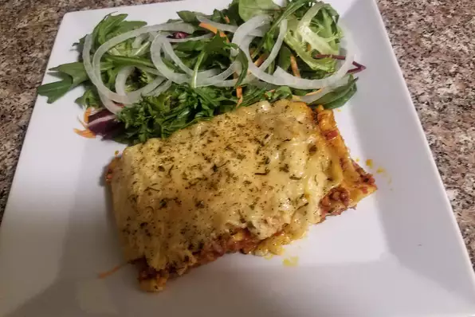

Yummy Malfati

This a quick and yummy Malfati
Ingredients
- 1 pound sweet Italian sausage
- ¾ pound lean ground beef
Preparation
- In a Dutch oven, cook sausage, ground beef, onion, and garlic over medium heat until well browned. Stir in crushed tomatoes, tomato paste, tomato sauce, and water. Season with sugar, basil, fennel seeds, Italian seasoning, 1 teaspoon salt, pepper, and 2 tablespoons parsley. Simmer, covered, for about 1 1/2 hours, stirring occasionally.